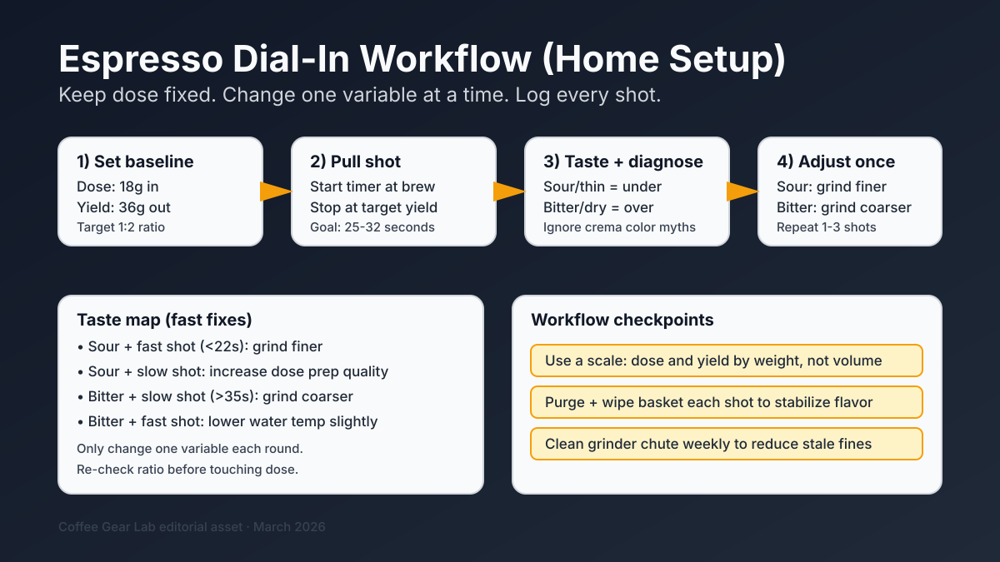

Espresso Shot Dial-In Workflow (2026): Fix Sour or Bitter Shots Fast
Most home espresso frustration comes from changing too many variables at once. This workflow keeps your process stable, then makes one targeted adjustment per shot so you can move from random outcomes to repeatable, good-tasting espresso in under 15 minutes.

Quick answer: Start at 18g in, 36g out (1:2 ratio), aim for 25-32 seconds, and taste before adjusting. If the shot is sour and thin, grind finer. If bitter and dry, grind coarser. Keep dose fixed and only change one variable each round.
Baseline setup (first shot)
| Variable | Start point | Why it matters |
|---|---|---|
| Dose | 18g | Keeps puck depth stable so taste changes are easier to interpret. |
| Yield | 36g (1:2 ratio) | Solid baseline for most medium roasts and pressurized-basket setups. |
| Shot time | 25-32 sec | Useful range for balancing sweetness vs harshness. |
| Water temp | Machine default / medium | Only tweak temperature after grind + ratio are close. |
| Puck prep | Level bed + firm tamp | Reduces channeling and random shot swings. |
New to budget machines? Use this with our best espresso machine under $200 guide so your workflow matches your machine type and basket reality.
Taste diagnosis and adjustments
| What you taste | Likely issue | First adjustment | Second adjustment (if needed) |
|---|---|---|---|
| Sour + thin | Under-extraction | Grind finer | Increase yield slightly (1:2.1) |
| Bitter + dry | Over-extraction | Grind coarser | Shorten yield slightly (1:1.8-1.9) |
| Hollow + flat | Stale grounds / uneven prep | Improve puck prep | Fresh beans + grinder cleanup |
| Fast shot + weak body | Too coarse / channeling | Grind finer | Check distribution and tamp level |
| Very slow + harsh shot | Too fine / overpacked puck | Grind coarser | Lower dose by 0.5g |
10-minute dial-in loop
- Pull baseline shot at 18g in / 36g out and record shot time.
- Taste and label it (sour, bitter, hollow, balanced).
- Change one variable only (usually grind size first).
- Pull the next shot and compare directly.
- Stop once sweetness and body are balanced; do not chase perfection forever.
If your grinder is hard to control for espresso, use the buyer-fit picks in best burr grinder for espresso and keep a backup baseline from our espresso grinder settings guide.
Tools that speed up consistency
- Coffee scale with timer — the fastest upgrade for repeatable yield and shot time.
- Low-retention burr grinder — reduces stale fines and random shot behavior.
- Simple grinder cleaning routine — keeps flavor from drifting week to week.
- Budget manual espresso grinder options — if you need precision without high spend.
- Coffee ratio reference — useful when dialing non-espresso brew methods too.
FAQ
Should I adjust grind size or dose first?
Adjust grind size first. Keep dose constant so each shot is comparable and your diagnosis stays clean.
What shot time should I target for budget espresso machines?
Start around 25-32 seconds for a 1:2 shot. Then use taste to decide whether to move finer or coarser.
Can I dial in without a scale?
You can, but it is slower and less repeatable. A scale is the highest-impact upgrade for dialing espresso quickly.
Why does my shot taste different every morning?
Common causes are grinder retention, inconsistent dose, and skipped cleanup. Purging stale grounds and logging dose/yield reduces this variability.
How often should I clean my grinder if I brew espresso daily?
Quick brush-out every few days and deeper cleaning weekly is usually enough to prevent stale buildup and static-heavy clumps.